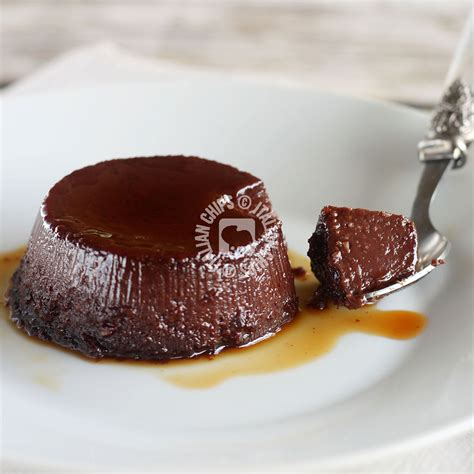

Chocolate Pudding Recipe

Description
This delightful chocolate pudding is always a treat and easy to whip up.
Ingredients
- 1 cup sugar
- 1/2 cup baking cocoa
- 1/4 cup corn starch
- 4 cup whole milk
- 2 tablespoon butter
Steps
- In a heavy saucepan, combine sugar, cocoa, cornstarch and salt. Gradually add milk. Bring to a boil over medium heat; boil and stir for 2 minutes. Remove from the heat;
- Puddings and custards can get lumpy. To prevent lumpy pudding, whisk all the dry ingredients together in a saucepan. Then gradually add the milk, a little bit at a time, whisking thoroughly after each addition until the mixture is smooth. As you are bringing the mixture to a boil, continue stirring constantly.